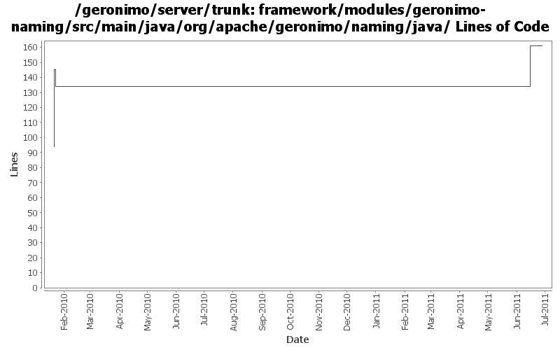

[root]/framework/modules/geronimo-naming/src/main/java/org/apache/geronimo/naming/java

| Author | Changes | Lines of Code | Lines per Change |
|---|---|---|---|
| Totals | 6 (100.0%) | 100 (100.0%) | 16.6 |
| djencks | 5 (83.3%) | 61 (61.0%) | 12.2 |
| genspring | 1 (16.7%) | 39 (39.0%) | 39.0 |
GERONIMO-5066 Use naming Reference to set up Datasources and use them to get global scope datasources from server to app client
1 lines of code changed in 1 file:
GERONIMO-6008 use openejb remote jndi system in client container to do global jndi lookup.
see OPENEJB-1596 for openejb side changes.
39 lines of code changed in 1 file:
GERONIMO-5041 Integration aries osgi jndi implementation
9 lines of code changed in 1 file:
GERONIMO-5025 Initial work on ee 6 scoped jndi stuff. Minimal testing so far
51 lines of code changed in 3 files: